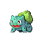
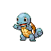
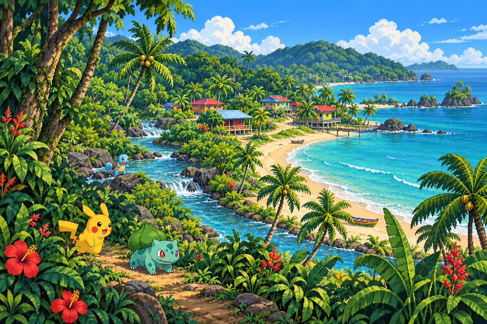

Un Caribe por descubrir
Una aventura inspirada en los paisajes y pueblos del Caribe costarricense. Hoy puedes dar tus primeros pasos en Pueblo Jiménez.
UNA AVENTURA POR EL CARIBE COSTARRICENSE
Pokémon, encuentros y duelos entre entrenadores en un mundo online inspirado en el Caribe de Costa Rica.
Desde tu navegador · Diseñado para PC



Tres compañeros.
Selva, costa y pueblos inspiran un mundo Pokémon para compartir.
Una aventura inspirada en los paisajes y pueblos del Caribe costarricense. Hoy puedes dar tus primeros pasos en Pueblo Jiménez.
Elige tus movimientos, cuida tus PS y juega duelos amistosos por turnos con tu equipo Pokémon.
Habla con los jugadores en el chat global o envía un susurro para conversar en privado.
VENTANAS DEL SITIO
Acceso, chat y menú con marcos de pixel art originales.
Aquí aparecerán los mensajes de los entrenadores conectados.